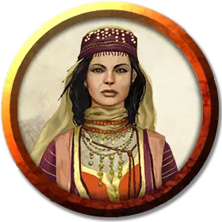

Цирюльница Бёрни
Burney the Barber
Громадный Дракон, хаотично-добрый, именной НИП

Класс Доспеха 21 (природный доспех)
Хиты 350 (20к20 + 140)
Скорость 40 футов, летая 80 футов, лазая 40 футов
| мод | спас | ||
|---|---|---|---|
| СИЛ | 27 | +8 | +8 |
| ЛОВ | 12 | +1 | +8 |
| ТЕЛ | 25 | +7 | +14 |
| мод | спас | ||
|---|---|---|---|
| ИНТ | 20 | +5 | +5 |
| МДР | 17 | +3 | +10 |
| ХАР | 19 | +4 | +11 |
Навыки Восприятие +17, Обман +11, Скрытность +8
Иммунитет к урону кислота
Чувства слепое зрение 60 футов, тёмное зрение 120 футов, пассивное Восприятие 27
Языки Общий, Драконий
Опасность 21 (33000 опыта)
Бонус мастерства +7
Особенности
Благословение Багамута. У Бёрни есть несколько благословений благодаря службе Багамуту:
• Если Бёрни не решит иначе, любое существо, менее могущественное, чем божество, отойдя на три шага от неё, уже не вспомнит её или что общалось именно с ней.
• Бёрни находится под действием постоянного заклинания сокрытие разума [mind blank], её нельзя обнаружить ни магическими, ни обычными средствами, пока она сама того не пожелает. В расплату за это благословение Бёрни не может прямо действовать против обитателей Девяти Преисподних — впрочем, она может воспользоваться помощью тех, кто на это способен.
• Бёрни всегда знает местонахождение Бродячего Базара и может переместиться туда аналогично заклинанию слово возврата [word of recall]. Именно так она появляется словно из ниоткуда на начинающем утром работу рынке, чтобы оказывать услуги цирюльника и рассказывать истории.
• Раз в день, когда Бёрни пожелает, она может мгновенно перенестись ко двору Багамута с помощью мощного благословения, подобного заклинанию уход в иной мир [plane shift].
Лекарь. Бёрни имеет преимущества черты Лекарь, а так же владеет комплектом целителя и набором травника.
Легендарное сопротивление (3/день). Если Бёрни проваливает спасбросок, она может вместо этого сделать спасбросок успешным.
Действия
Мультиатака. Бёрни может использовать Ужасающее присутствие. Затем он совершает три атаки: одну укусом, и две когтями.
Укус. Рукопашная атака оружием: +15 к попаданию, досягаемость 15 футов, одна цель. Попадание: Колющий урон 19 (2к10 + 8).
Коготь. Рукопашная атака оружием: +15 к попаданию, досягаемость 10 футов, одна цель. Попадание: Рубящий урон 15 (2к6 + 8).
Хвост. Рукопашная атака оружием: +15 к попаданию, досягаемость 20 футов, одна цель. Попадание: Дробящий урон 17 (2к8 + 8).
Ужасающее присутствие. Все существа на выбор Бёрни, находящиеся в пределах 120 футов от него и знающие о его присутствии, должны преуспеть в спасброске Мудрости Сл 19, иначе станут испуганными на 1 минуту. Существо может повторять этот спасбросок в конце каждого своего хода, оканчивая эффект на себе при успехе. Если спасбросок существа был успешным, или эффект на нём окончился, оно получает иммунитет к Ужасающему присутствию этого дракона на следующие 24 часа.
Оружия дыхания (перезарядка 5–6). Бёрни использует один из следующих видов оружия дыхания.
• Кислотное дыхание. Бёрни выдыхает кислоту 90-футовой линией шириной 10 футов. Все существа в этой линии должны совершить спасбросок Ловкости Сл 22, получая урон кислотой 63 (14к8) при провале, или половину этого урона при успехе.
• Замедляющее дыхание. Бёрни выдыхает газ 90-футовым конусом. Все существа в этой области должны преуспеть в спасброске Телосложения Сл 22. При провале существо не может использовать реакции, его скорость уменьшается вдвое, и оно не может совершать более одной атаки в ход. Кроме того, существо может в свой ход совершать либо действие, либо бонусное действие, но не то и другое. Эти эффекты длятся 1 минуту. Существо может повторять этот спасбросок в конце каждого своего хода, оканчивая эффект на себе при успехе.
Смена формы. Бёрни магическим образом превращается в гуманоида или зверя, чей показатель опасности не превышает его собственный, или принимает свой истинный облик. Он принимает свой истинный облик, если умирает. Всё снаряжение, которое он несёт или носит, сливается с новым обликом или используется им (на выбор дракона).
В новом облике Бёрни сохраняет мировоззрение, хиты, Кости Хитов, способность говорить, владения, Легендарные действия, действия логова, значения Интеллекта, Мудрости и Харизмы, а также действия. Все остальные характеристики и умения заменяются характеристиками и умениями нового облика, за исключением классовых умений и легендарных действий нового облика.
Легендарные действия
Бёрни может совершить 3 легендарных действия, выбирая из представленных ниже вариантов. За один раз можно использовать только одно легендарное действие, и только в конце хода другого существа. Бёрни восстанавливает использованные легендарные действия в начале своего хода.
Обнаружение. Бёрни совершает проверку Мудрости (Восприятие).
Атака хвостом. Бёрни совершает атаку хвостом.
Атака крыльями (стоит 2 действия). Бёрни бьёт своими крыльями. Все существа в пределах 15 футов от Бёрни должны преуспеть в спасброске Ловкости Сл 23, иначе получат дробящий урон 15 (2к6 + 8) и будут сбиты с ног. После этого дракон может пролететь на расстояние, не превышающее половину скорости полёта.
Описание
Бёрни выглядит как весёлая и ухоженная калишитка. Она предоставляет любые услуги цирюльника, в том числе медицинский уход за ранами и болезнями. Для целей исцеления считайте, что у Бёрни есть черта Лекарь и умение в обращении с наборами лекаря и травника. Во время работы Бёрни рассказывает разные истории, выдумывая их на ходу, но обязательно с моралью в конце. Рассказы Бёрни могут подтолкнуть к достижимой цели, если клиент доброго мировоззрения и готов принимать советы болтливой цирюльницы.
На самом деле Бёрни —древний медный дракон, и зовут её Баларистал. Бёрни отправилась на Авернус по прямому поручению Багамута, чтобы следить за активизацией последователей Тиамат. Королева злых драконов уже пыталась сбежать из Девяти Преисподних, и её противники не хотят рисковать. Бёрни особенно интересуется сведениями о действиях Аркона Жестокого.